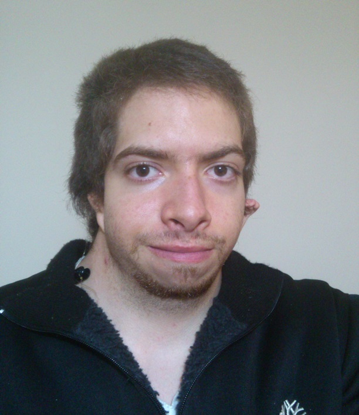

Omar Castro
Computer engineer
Swipe to change page

About me
Omar Alejandro Castillo de Castro, born in Santo Domingo, Dominican Repubic, is an engineer graduated from
the Faculty of Engineering of University of Porto (FEUP) in the master's degree of Informatics and Computing.
A creative, hard-working, adaptable, caring and responsible person. He likes traveling (not alone) and have a fit body.
He has interest in software management, FullStack Web engineering, robotics and virtual and augmented reality.